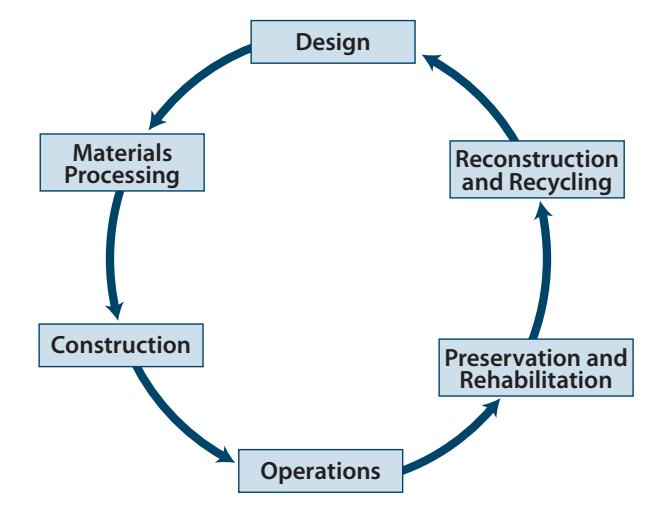
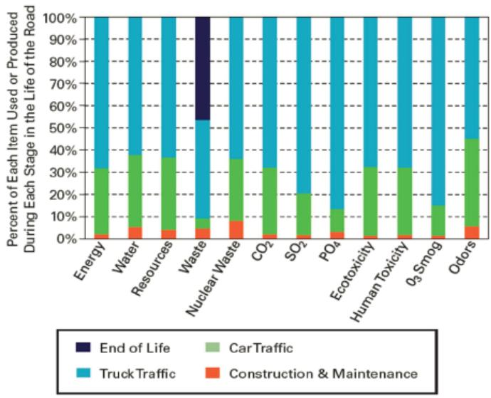

Concrete Pavement Recycling Integration
Concrete Pavement Recycling Integration is a decision‑making framework that directs agencies to consider recycled concrete aggregate or other recycled‑concrete waste materials as alternatives to virgin aggregates in order to lower life‑cycle costs and greenhouse‑gas emissions while maintaining required durability [1][2][3]. It operates by evaluating local material availability, transport distances, specification compliance, and permitting constraints early in the project scoping phase, and it quantifies trade‑offs through comparative life‑cycle cost analysis, life‑cycle assessment, and sustainability rating systems [3][4]. The approach is context‑sensitive—treating material choices as dependent on site conditions, transportation mode, and performance requirements—and seeks to maximize the use of locally sourced recycled, coproduct or waste materials to reduce transportation impacts and reliance on scarce virgin aggregates [1][2][3]
Purpose and decision context
The guides concur that Concrete Pavement Recycling Integration is intended to support the stakeholder decision on whether a pavement project should employ recycled concrete aggregate or other recycled‑concrete waste materials instead of virgin or distant aggregates, and if so, how and where the reclaimed material will be used. The decision is framed as a material‑selection choice aimed at “lower life‑cycle costs and reduced greenhouse‑gas emissions while preserving durability.” It calls for early‑project consideration of local availability and transport factors – “One other important consideration in the use of RCWMs is the mode and distance that they are transported,” and recognizes that “The energy consumed and emissions generated by the trucks can easily overcome any advantage of using the RCA compared to a suitable locally available material.” By “maximizing the use of local materials and/or recycled, coproduct, or waste materials (RCWMs) reduces the amount of material that has to be transported, saving money and reducing emissions,” and by treating “materials choices … as context sensitive” the guides direct analysts to apply comparative LCA/LCCA methods. Quantitative benefit analysis is emphasized: “Quantification of economic and sustainability benefits will generally help to support the choice of recycling,” while also noting that “Decisions are often made based on initial cost, which can sometimes eliminate options that include recycling.” The overarching intent is to enable planners to “minimize construction cost,” “reduce dependence on good quality virgin aggregates, which may be hard to find or expensive to bring in,” and thereby “provide a sustainable option.” [1][2][3]
[1] — Ch. 2 (pp. 36–37); [2] — Objectives (p. 70); [3] — Ch. 2 (pp. 19–26), Ch. 3 (pp. 31–38)
Concrete pavement recycling integration is driven by a set of interrelated problems and needs: it must lower project costs while reducing environmental impacts through the substitution of virgin aggregates with locally sourced recycled, coproduct, or waste materials; it must provide a systematic way to manage excavated pavement material and cut overall construction expenses; it must address the economic strain and significant environmental harm caused by dependence on virgin aggregates and the accumulation of aging concrete in landfills, requiring quantitative life‑cycle assessment and cost analysis; and it must enable a comprehensive evaluation of a pavement’s full life‑cycle footprint—from raw‑material extraction through manufacturing, transport, construction, operation, and end‑of‑life demolition, disposal, recycling, and reuse—so that sustainable design decisions can be made. [1][2][3][4]
The following figure illustrates the comprehensive life cycle of concrete pavement that underpins these sustainability assessments.

The concrete pavement life cycle (Van Dam and Taylor 2009). [4]The figure depicts a cyclical process consisting of six stages: Design, Materials Processing, Construction, Operations, Preservation and Rehabilitation, and Reconstruction and Recycling.
[1] — Ch. 2 (pp. 36–37); [2] — Objectives (p. 70); [3] — Ch. 2 (pp. 19–26), Ch. 3 (pp. 31–38), Ch. 7 (pp. 70–72); [4] — Ch. 6 (p. 97)
Scope and applicability
The guides agree that concrete‑pavement recycling integration is appropriate for a broad range of projects. They note that “Most concrete pavement projects can and should be considered to be candidates for recycling,” including specific types such as highway reconstruction, park‑road upgrades, and uses “utilized as a pavement subbase in frost‑susceptible areas.” The approach is most suitable when the existing slab remains of high quality so it can serve as engineered aggregate; as one source states, “Much of the existing concrete infrastructure is already comprised of the best available materials, so long‑lasting new infrastructure can be constructed using RCA if the RCA is treated as an engineered material.” Asset condition must allow the reclaimed concrete to meet durability requirements, and “The use of an RCA, for example, may enhance overall sustainability if the concrete pavement is to be recycled in place as base or subbase.”
Decision‑making should occur at the earliest phases. The FHWA policy “calls upon us [the FHWA], and the state transportation departments, to explicitly consider recycling as early as possible in the development of every project,” and during design or early planning the team should assess local supply options because “Maximizing the use of local materials and/or recycled, coproduct, or waste materials (RCWMs) reduces the amount of material that has to be transported, saving money and reducing emissions.” Selection of projects is guided by factors such as “characteristics that make a project a “good” candidate for recycling are driven by specification requirements, production options, availability of space for recycling, environmental permitting restrictions, the cost of virgin materials, and other considerations,” and a “favorable balance between the potential benefits of recycling (i.e., sustainability considerations and initial economic benefits) and the impact of using recycled products on pavement performance and service life” must be demonstrated. [1][3]
[1] — Ch. 2 (pp. 36–37); [3] — Ch. 2 (pp. 19–22), Ch. 3 (pp. 31–38)
Recycling concrete pavement is unsuitable when the required recycled material cannot be sourced locally, because “the fuel use and emissions from long‑distance trucking can outweigh any sustainability benefit.” It also becomes inappropriate if incorporating the recycled content would jeopardize durability—“leading to premature failure that negates environmental gains.” A different approach is warranted when a clear economic advantage is absent; “economic benefits are not as readily evident, or cost analysis can result in equivalent costs,” so cost savings cannot be demonstrated. Likewise, projects where “characteristics that make a project a “good” candidate for recycling are driven by specification requirements, production options, availability of space for recycling, environmental permitting restrictions, the cost of virgin materials, and other considerations” do not favor recycled content should opt for conventional material. The decision must also reflect “There must also be a favorable balance between the potential benefits of recycling (i.e., sustainability considerations and initial economic benefits) and the impact of using recycled products on pavement performance and service life.” When reclaimed concrete “Recycled materials often contain minor amounts of contaminants and/or pollutant materials” that could pose “construction and use of these materials in systems that are exposed to air and water may present some environmental risks,” a non‑recycled strategy is required. In dense urban environments, recycling operations may be “concrete recycling operations can be viewed as unfriendly to local communities due to lighting, noise, vibration, dust, and traffic impacts,” especially when “The selection of on‑site vs. off‑site recycling will heavily influence local impacts, which may be most pronounced when operations occur in urban settings.” Moreover, “Noise and vibrations are most commonly caused by engines powering crushing and screening equipment.” Under such conditions, off‑site processing or conventional disposal is preferable. [1][3]
The following figure illustrates a typical off-site concrete pavement recycling operation, which serves as an alternative to on-site processing in sensitive environments.
 Typical off-site concrete pavement recycling operation [3]
Typical off-site concrete pavement recycling operation [3]
The image displays a mobile crushing and screening plant operating on a dirt surface, processing piles of broken concrete into recycled aggregate. A yellow excavator is actively loading debris into the hopper of the red machinery, while a white tanker truck waits nearby to transport materials or water.
[1] — Ch. 2 (pp. 36–37); [3] — Ch. 2 (pp. 21–22), Ch. 3 (p. 31), Ch. 7 (pp. 70–72)
Information needs
The integration of concrete pavement recycling requires gathering a set of condition and site data, cost and traffic information, environmental inventories, and stakeholder input. Site assessments must identify the availability and proximity of recycled, coproduct or waste materials so that transportation distances can be minimized; this aligns with the practice of “Maximizing the use of local materials and/or recycled, coproduct, or waste materials (RCWMs) reduces the amount of material that has to be transported, saving money and reducing emissions.” A life‑cycle assessment is initiated by a clear “goal and scope definition” followed by an “inventory analysis (life-cycle inventory or LCI)” that quantifies material quantities, energy use, emissions, water consumption and waste. The guides also require detailed project specifications—including “specification requirements, production options, availability of space for recycling, environmental permitting restrictions, the cost of virgin materials”—to evaluate whether recycled concrete can be used without compromising pavement performance. Stakeholder participation is needed to decide whether concrete recycling is an option for a particular project and to identify which type of recycled material could be produced and where this recycled material could be utilized. Together these data elements support economic and environmental decision‑making for sustainable pavement design. [1][3][4]
The following figure illustrates a practical application of these principles by depicting an airfield pavement layout that incorporates recycled concrete aggregate in its base.
 Airfield pavement layout at Hartsfield-Jackson Atlanta Airport showing features with RCA base [3]
Airfield pavement layout at Hartsfield-Jackson Atlanta Airport showing features with RCA base [3]
The figure displays a schematic of the airfield pavement layout, identifying specific areas such as runways and taxiways that utilize recycled concrete aggregate (RCA) in their subbase.
[1] — Ch. 2 (pp. 36–37); [3] — Ch. 2 (pp. 24–25), Ch. 3 (p. 31); [4] — Ch. 6 (p. 97)
For concrete pavement recycling integration, the information used in assessment tools must be accurate and sufficiently complete to satisfy the data and assumption requirements of the chosen economic, environmental, or rating‑system analysis. The specific set of data needed depends on the tool, the analysis objective, project characteristics, alternatives under comparison, and any constraints or thresholds that will be applied; therefore only the relevant, up‑to‑date details should be gathered. A partial list of typical required information is provided in Table 2.1. [3]
[3] — Ch. 2 (p. 23)
Alternatives
Feasible alternatives for concrete pavement recycling integration should be juxtaposed across four principal dimensions. First, material selection must compare “recycled concrete aggregate (RCA) as an economical and sustainable alternative to conventional aggregates.” with conventional virgin aggregates; the scope can also include industrial coproducts such as slag cement or blast‑furnace‑slag aggregate and waste‑derived materials like fly ash where available. The guides note that “Recycled materials—Materials obtained from an old pavement and included in materials to be used in the new pavement. A common recycled material is RCA.” Moreover, “Maximizing the use of local materials and/or recycled, coproduct, or waste materials (RCWMs) reduces the amount of material that has to be transported, saving money and reducing emissions,” while “One other important consideration in the use of RCWMs is the mode and distance that they are transported.”
Second, end‑of‑life pathways for the removed pavement should be evaluated among the three routes identified: “End‑of‑life options for concrete pavements include recycling, reuse, or landfilling,” with “the recycling of existing concrete pavements is generally considered to be one of the most sustainable end‑of‑life options for this infrastructure component.”
Third, processing logistics require comparison of on‑site versus off‑site operations; “The selection of on‑site vs. off‑site recycling will heavily influence local impacts,” and “concrete recycling operations can be viewed as unfriendly to local communities due to lighting, noise, vibration, dust, and traffic impacts.”
Fourth, decision makers need to select an analytical framework: “LCCA is an economic analysis technique that can be used to quantify the economic components of sustainability,” or “LCA is most suitable for analyzing and quantifying the environmental impacts of a specific project or strategy over a life cycle,” or employ “Rating systems rely heavily on providing incentives (points and recognition) for addressing a broad set of sustainability best practices, including societal impacts.” For each alternative, analysts should weigh initial construction costs, long‑term economic savings, energy use, greenhouse‑gas emissions, durability expectations, and constraints such as material availability, transportation distance and mode. [1][3]
[1] — Ch. 2 (pp. 36–37); [3] — Ch. 2 (pp. 19–26), Ch. 7 (p. 72)
Decision criteria
The guides identify three core criteria—sustainability, durability, and cost—that must drive the decision on integrating recycled concrete pavement. Sustainability is highlighted as a primary driver in two sources, which state that the decision “should be governed primarily by sustainability criteria—evaluating economic, environmental and societal impacts through tools such as life‑cycle assessments” and that projects should “Provide a sustainable option.” Cost considerations are also emphasized, with calls to “Minimize construction cost,” “Reduce dependence on good quality virgin aggregates, which may be hard to find or expensive to bring in,” and recognition that “Decisions are often made based on initial cost.” Durability appears as the foremost concern in another source, noting that “the durability of the concrete is extremely important to avoid premature failure” and linking it to life‑cycle performance. All three criteria are linked: using local or recycled materials “Maximizing the use of local materials and/or recycled, coproduct, or waste materials (RCWMs) reduces the amount of material that has to be transported, saving money and reducing emissions,” thereby supporting both cost and sustainability goals. Moreover, “Materials choices are context sensitive and thus must be considered broadly to enhance sustainability over the life cycle.” Consequently, the decision framework should prioritize sustainability and durability while ensuring cost effectiveness, reflecting the varied emphases across the guides. [1][2][3]
[1] — Ch. 2 (pp. 36–37); [2] — Objectives (p. 70); [3] — Ch. 2 (pp. 19–26), Ch. 3 (p. 31), Ch. 7 (p. 72)
When evaluating concrete pavement recycling options, economic benefit should be given primary consideration; if a project can demonstrate clear cost savings, that factor dominates the decision. If cost analysis shows equivalent or negligible savings, the assessment must shift to give comparable weight to environmental and societal impacts—such as reduced aggregate extraction, lower energy use, greenhouse‑gas reductions, and diminished community disturbance. Competing criteria for concrete pavement recycling should be weighted according to the project’s stakeholder goals: if cost savings are paramount, economic factors quantified through life‑cycle cost analysis receive the highest priority; when reducing environmental impact is the main objective, life‑cycle assessment metrics dominate; and where broader sustainability—including societal benefits—is desired, rating‑system scores become more influential. Competing criteria for concrete pavement recycling should be weighted by first making agency preferences and allowable uses explicit—through specifications, special provisions, pre‑construction conferences, or similar mechanisms—and then using that clarified framework during early project planning to evaluate each factor. Ultimately the three sustainability pillars (economic, environmental, societal) should be quantified and compared so that the option with the greatest overall triple‑bottom‑line benefit is selected. [3]
[3] — Ch. 2 (pp. 21–26), Ch. 3 (pp. 37–38)
Analysis methods and tools
Concrete pavement recycling integration relies on a set of complementary evaluation tools that span environmental, economic, and societal dimensions. The primary environmental assessment is Life‑Cycle Assessment (LCA), described as “An LCA is an environmental assessment of a product over its life cycle” and implemented through the ISO‑defined four‑step framework—goal and scope definition, inventory analysis, impact assessment, and interpretation. The guides note that LCA is “most suitable for analyzing and quantifying the environmental impacts of a specific project or strategy over a life cycle,” and that it can be performed with software such as Athena, SimaPro, TRACI, PaLATE, BE2ST‑in‑Highways, among others. Economic sustainability is captured through Life‑Cycle Cost Analysis (LCCA), identified as “LCCA is an economic analysis technique that can be used to quantify the economic components of sustainability.” In addition, rating systems are employed to assign points or recognition for meeting broader societal and sustainability criteria, reflecting the categorization of assessment tools into “economic analysis, environmental assessment, and rating systems.” Effective application of these tools requires systematic data collection and clear assumptions. No condition ratings, decision trees, risk assessments, or benefit‑cost analyses are referenced in the sources. [1][3][4]
[1] — Ch. 2 (pp. 36–37); [3] — Ch. 2 (pp. 21–26); [4] — Ch. 6 (p. 97)
The results depend on a set of core assumptions. First, the sustainability advantage of recycled concrete aggregate is assumed to materialize only when the aggregate is obtained locally; as one source notes, “Maximizing the use of local materials and/or recycled, coproduct, or waste materials (RCWMs) reduces the amount of material that has to be transported, saving money and reducing emissions.” Accordingly, analyses must capture haul distances and truck‑emission factors. The analysis also assumes that RCA can satisfy structural specifications, that on‑site crushing capacity is available, that permitting hurdles are manageable, and that virgin‑aggregate prices are high enough for recycling to be economically viable; however, “Decisions are often made based on initial cost, which can sometimes eliminate options that include recycling.”\n\nClassification of the reclaimed material introduces uncertainty. The allocation of production burdens hinges on whether the material is treated as waste or a product—“Key to consideration of recycled concrete in an LCA is its definition as a waste or a product”—and market dynamics may shift this status, affecting life‑cycle results.\n\nLife‑cycle assessment itself brings further assumptions and uncertainties. The boundary must encompass extraction through end‑of‑life handling, and the selection of impact categories (energy use, land use, climate change, toxicity, etc.) is required; yet the data set is large and variable. Moreover, “Definitions related to energy, and reporting of energy use in LCA, are controversial and thus are typically reported in terms of primary energy and feedstock energy,” creating potential divergence in reported energy savings.\n\nOther sources of uncertainty include variability in raw‑material and fuel consumption, transport distances, long‑term pavement performance, and the completeness and currency of inventory databases. These factors can alter comparative sustainability outcomes and must be explicitly addressed when evaluating concrete pavement recycling integration. [1][3][4]
[1] — Ch. 2 (pp. 36–37); [3] — Ch. 2 (pp. 19–26), Ch. 3 (p. 31), Ch. 7 (p. 70); [4] — Ch. 6 (p. 97)
Stakeholders and constraints
The primary entities that provide input, decide, and approve concrete pavement recycling integration are the Federal Highway Administration together with state transportation departments, agency specifications and related pre‑construction mechanisms, and the project stakeholders who supply data and perform benefit assessments. The FHWA and state DOTs are explicitly tasked to consider recycling early in every project — “calls upon us [the FHWA], and the state transportation departments, to explicitly consider recycling as early as possible in the development of every project.” Agency preferences and allowable uses must be set out through specifications, special provisions, pre‑construction conferences, etc., providing the essential guidance for project scoping. Stakeholders generate the quantitative environmental and societal benefit analyses that “can assist stakeholders in making the decision to use recycled concrete,” and because they conduct the assessment they also serve as the approving authority. Ultimately, “the decision to recycle, as well as decisions on how and where to use the recycled material, can be made” by the project decision‑makers using these inputs. [3]
[3] — Ch. 2 (pp. 19–23), Ch. 3 (pp. 37–38)
The choice to integrate concrete‑pavement recycling is bounded by several overlapping policy, permitting, standards, and design constraints. Federal statutes—specifically the Moving Ahead for Progress in the 21st Century Act (MAP‑21) and the Transportation Equity Act for the 21st Century (TEA‑21)—“emphasized that agencies need to use resources wisely to maximize cost savings and improve the sustainability of highway infrastructure,” thereby limiting projects that ignore recycling opportunities. The FHWA Recycled Materials Policy further “calls upon … state transportation departments, to explicitly consider recycling as early as possible in the development of every project.” At the technical level, life‑cycle assessment must conform to ISO 14040/44 (“standardized by the International Standardization Organization (ISO) under ISO 14040 and ISO 14044”) and to the FHWA Pavement Life‑Cycle Assessment Framework (“the FHWA has recently supported development of a Pavement Life‑Cycle Assessment Framework”), which prescribe approved tools, data sets, and classification rules. Designers must also follow documented procedures from SETAC and the EPA, as required by “U.S. Environmental Protection Agency (EPA) have documented standard procedures.” Agency specifications, special provision clauses, and pre‑construction conference decisions dictate allowable uses of recycled material (“agency preferences and allowable uses should be clearly articulated through specifications, special provisions, preconstruction conferences”). Projects must secure any required environmental permits and provide adequate on‑site space for crushing and processing (“characteristics that make a project a ‘good’ candidate for recycling are driven by … environmental permitting restrictions, the cost of virgin materials”). Finally, a favorable balance between sustainability benefits and pavement performance must be demonstrated (“There must also be a favorable balance between the potential benefits of recycling … and the impact of using recycled products on pavement performance and service life”). [3][4]
[3] — Ch. 2 (pp. 19–25), Ch. 3 (pp. 31–38); [4] — Ch. 6 (p. 97)
Timing and implementation
The decision to integrate concrete pavement recycling should be taken at the earliest stage of a project’s development, ideally when alternatives are first being evaluated and sustainability criteria are being defined. The decision to integrate concrete‑pavement recycling should be taken during the project selection and scoping phase, before detailed design is finalized. The decision to integrate concrete pavement recycling should be taken early in the project lifecycle, once options are identified during the initial planning and scoping phase. Making this choice at the project selection/scoping point enables agencies to quantify economic and environmental benefits before cost‑driven decisions eliminate recycling options, to articulate preferences and allowable uses through specifications and preconstruction conferences, and to assess material availability, processing space, permitting limits, and life‑cycle trade‑offs so that the recycled material can be applied in a way that maximizes overall project benefits. [3]
The following figure illustrates key considerations during the project selection and scoping phase to support this early decision-making process.
 Project selection and scoping considerations flowchart for concrete recycling integration. [3]
Project selection and scoping considerations flowchart for concrete recycling integration. [3]
The figure presents a vertical decision-making framework that guides the evaluation of recycled concrete aggregate from initial project identification through to final specification development. It illustrates the process by breaking down key considerations into sequential phases, including source characterization, production options (mobile, stationary, and off-site processing), economics, and other factors such as environmental impacts.
[3] — Ch. 2 (p. 19), Ch. 3 (pp. 31–38)
Action for concrete pavement recycling integration is typically triggered when legislative changes or heightened sustainability priorities emerge, prompting stakeholders to consider environmental benefits alongside cost. The appearance of such policy shifts or sustainability mandates signals the need to employ assessment tools—economic analysis, environmental assessment, or rating systems—to evaluate recycling options. Additionally, once the necessary project data and appropriate assumptions are gathered to satisfy the requirements of these tools, the decision‑making process can be initiated. [3]
[3] — Ch. 2 (p. 23)
The selected recycling option requires completing a full life-cycle assessment of the concrete pavement. Required resources include LCA software such as SimaPro to handle the large data sets, life‑cycle inventory information from Portland Cement Association reports, and guidance documents from ISO 14044 or EPA for methodological consistency. The work proceeds through the four standard LCA phases—goal and scope definition, inventory analysis, impact assessment, and interpretation—and because the analysis manipulates extensive material and energy flow data, it is expected to be time‑intensive. [4]
[4] — Ch. 6 (p. 97)
Outcomes and follow-up
The guides define success for concrete‑pavement recycling integration as the point at which a project maximizes locally sourced recycled, coproduct or waste materials (RCWMs) and deliberately incorporates recycled concrete aggregate early in the design, thereby cutting transportation distances, lowering emissions, reducing reliance on virgin aggregates, and delivering durable pavement that avoids premature failure. Success is also marked by measurable economic savings for the owner and quantifiable environmental improvements—such as reduced energy use, water consumption, greenhouse‑gas emissions, hazardous waste, land and resource use—relative to conventional virgin‑aggregate designs while maintaining equal or better service life. The achievement is confirmed through a suite of performance and sustainability metrics: the share of RCWMs used and associated transport miles are quantified; Life‑Cycle Cost Analysis captures net cost reductions; a comprehensive Life‑Cycle Assessment following ISO‑14044/FHWA procedures (goal and scope definition, inventory analysis, impact assessment, interpretation) quantifies reductions across all impact categories; rating‑system scores or other sustainability indicators are applied; and long‑term pavement performance is monitored to verify durability. [1][3][4]
The following figure illustrates the ecoprofile of different life-cycle phases for a typical road to contextualize these sustainability metrics.

Ecoprofile of different life-cycle phases from a typical road (Wathne 2010 based on EAPA 2004) [4]The figure displays an ecoprofile chart comparing the percentage of environmental impacts across various categories, such as energy and greenhouse gas emissions, attributed to different life-cycle phases including construction, traffic, and end-of-life. The data indicates that vehicle fuel consumption during the use phase is the overwhelming source of environmental impact, which aligns with the goal of maximizing locally sourced recycled materials to reduce transportation distances and emissions.
[1] — Ch. 2 (pp. 36–37); [3] — Ch. 2 (pp. 19–26), Ch. 7 (p. 72); [4] — Ch. 6 (p. 97)
To monitor Concrete Pavement Recycling Integration, agencies should apply the FHWA pavement‑specific Life‑Cycle Assessment (LCA) framework, first defining clear goals and scope for the recycling option and then gathering a complete life‑cycle inventory of material, energy and emission data. Results should be tracked through quantitative sustainability assessments such as life‑cycle cost analysis for economic performance, life‑cycle assessment for environmental impacts, and applicable rating systems that capture broader best‑practice scores. The outputs of these tools are recorded in project documentation to show cost savings, emission reductions, and any earned points or recognitions. By comparing the documented metrics against stakeholder goals, agencies can identify which recycling strategies delivered the greatest benefits and refine design specifications, material choices, and procurement criteria for future projects. [3]
[3] — Ch. 2 (pp. 24–26)